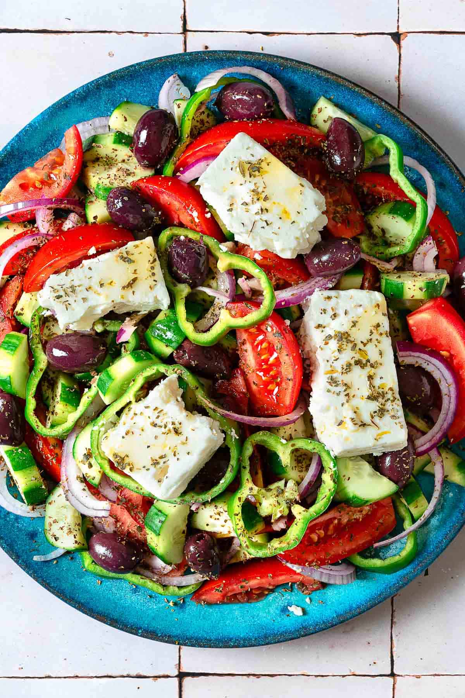

Greek Salad

Description
A bright fresh salad that will liven up any dish! Simple, quick to assemble when you need to make a great side in a pinch.
Ingredients
- 1 medium red onion, thinly sliced into half moons
- 4 medium juicy tomatoes, sliced into bite-sized pieces or wedges
- 1 English cucumber, partially peeled to make a striped pattern and sliced into half moons
- 1 green bell pepper, cored and sliced into rings
- 1 handful pitted Kalamata olives
- 1 1/2 teaspoons dried oregano
- Kosher salt
- 1/4 cup extra virgin olive oil
- 1-2 tablespoons red wine vinegar
- 1 (7 ounce) block Greek feta cheese in brine, torn into slabs
Steps
- Shock the onion (optional). If you’d like to mellow the onion’s raw taste, fill a small bowl with ice water. Add about 1 teaspoon of red wine vinegar to the water, then add the sliced onion. Set aside to soak for 10 minutes or so.
- Combine the veggies. Place the tomato, cucumber, bell pepper, and olives in a large serving dish. Remove the onions from the water and add to the dish with the rest of the vegetables.
- Season. Sprinkle the vegetables with 3/4 teaspoon of oregano and a pinch of kosher salt. Add the oil and vinegar (to your liking) then give everything a gentle toss.
- Finish and serve. Top the salad with slabs of feta and sprinkle with the remaining 3/4 teaspoon of oregano and enjoy!
Home